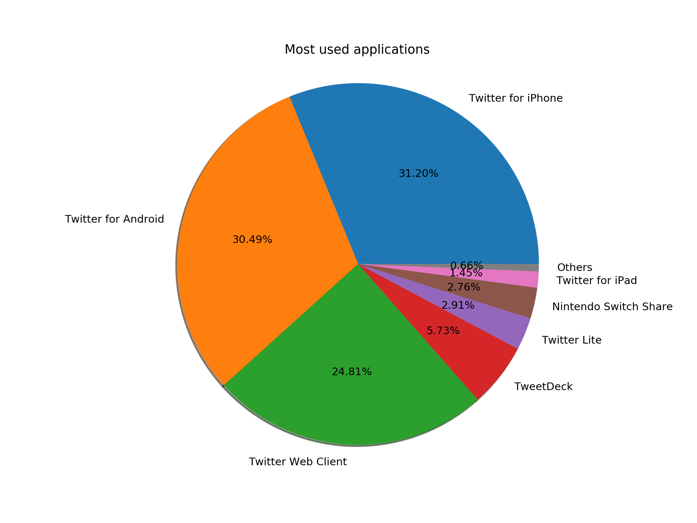
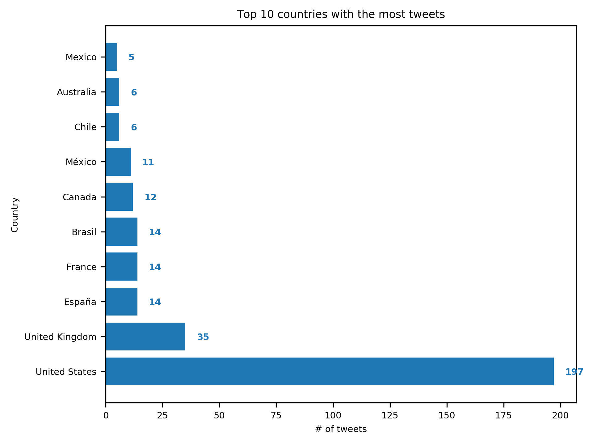
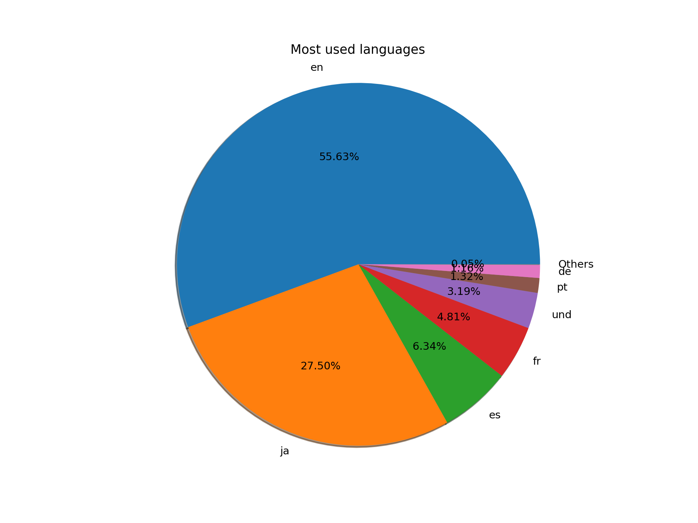
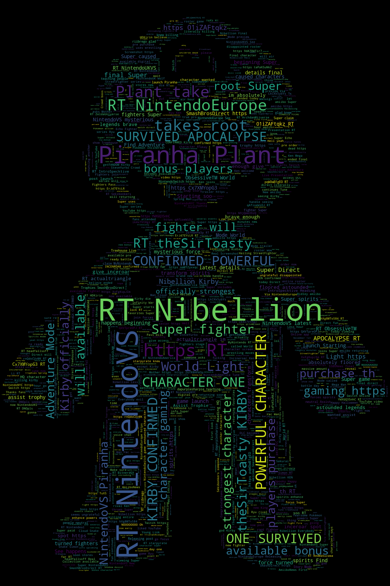

Análisis de Datos de Twitter
Aplicaciones más usadas para realizar tweets

Países con mayor cantidad de tweets

Lenguajes más usados para realizar tweets

Nube de palabras con términos en inglés más usados
